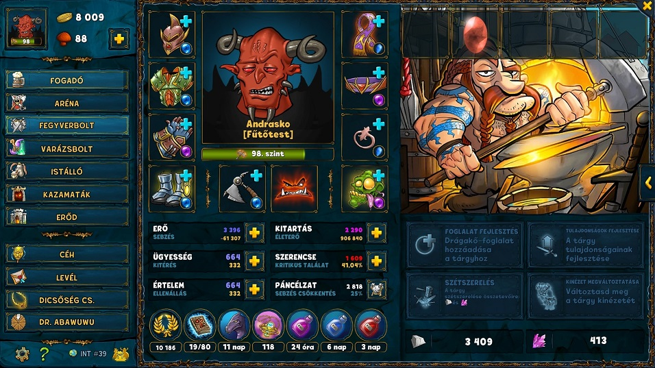

Ide egyeb aprosagokat gyujtok folyamatosan
Petek
75. szint szukseges hozza.A petek kategoriakra vannak osztva amik egy-egy tulajdonsagunkert felelosek. minel tobb pet van annal nagyobb a bonusz (1% petenkent). ha egz pet eleri a 100. szintet + 0.5% ha 150 akkor 0.75 es 200-nal pedig mar 1% a bonusz. Kioldasukhoz eloszor is le kell oket gyozni a kazamataban masreszt vanna helyhez evszakhoz es napszakhoz kotott feltetelek. eloszor a 3. petet kell huzni 100ra ezzel le lehet gyozni a 3. sor 2. petet. utana torekedni kell h a kovetkezo amit huzni tudsz az a 3. sorbol legyen lehetoseg szerint!
Boszorkany
66. szint szukseges hozza. Tekercseivel megigezheted a targyaidat amik fontos bonuszzokat adnak. Illetve minden nap egy specifikus targyat ha beledobsz a bolti ar ketszereset adja.
Kovacs
90. szint szukeges hozza. Itt tudsy foglalatot csinaltatni, targyakat betorni, fejleszteni illetve a kinezetet valtoztatni. Sztem kis szinten torj be mindent illetve adj el mert folosleges pazarlas (tapasztalat)
Torony
9. Kazamatat kell teljesiteni. Kapsz 3 segedet akiket ugyanugy oltoztethetsz illetve fejlesztheted a szintjuket legfeljebb a tiedre. Izgalmas lesz oltoztetni oket :D
Arena manager

105. szinttol elerhetove valik egy erdekes funkcio. Kezelned kell a bevetelt. folymatosan kell fejleszteni az objektumokat, hogz tobb penzt kapj de nem mindig erdemes tovabb huzni mert tul draga lesz. Vannak duplazasi pontok ahol nagy ugras lesz a bevetelt illetoen: 25,100, 250, stb
a bal felso sarokban fog gyulni a bevetel amit ha bealdozol magasabb szamon indul a jatek. Minden egyes runa 5% hozamot novel illetve ha osszegyulik 1000 runa akkor a targyakon megjelenik egy runa bonusz:
Tapasztalat bónusz kalandokon - max. +10%
Arany bónusz kalandokon - max. +50%
Esély epikus tárgyak találására - max. +50%
Jobb minőségű tárgyak - max. 5
Életerő bónusz - max. +15%
Tűz sebzés - max. +60%, csak fegyvereken
Jég sebzés - max. +60%, csak fegyvereken
Villám sebzés - max. +60%, csak fegyvereken
Tűz ellenállás - max. +75%
Jég ellenállás - max. +75%
Villám ellenállás - max. +75%
Összellenállás - max. +25%